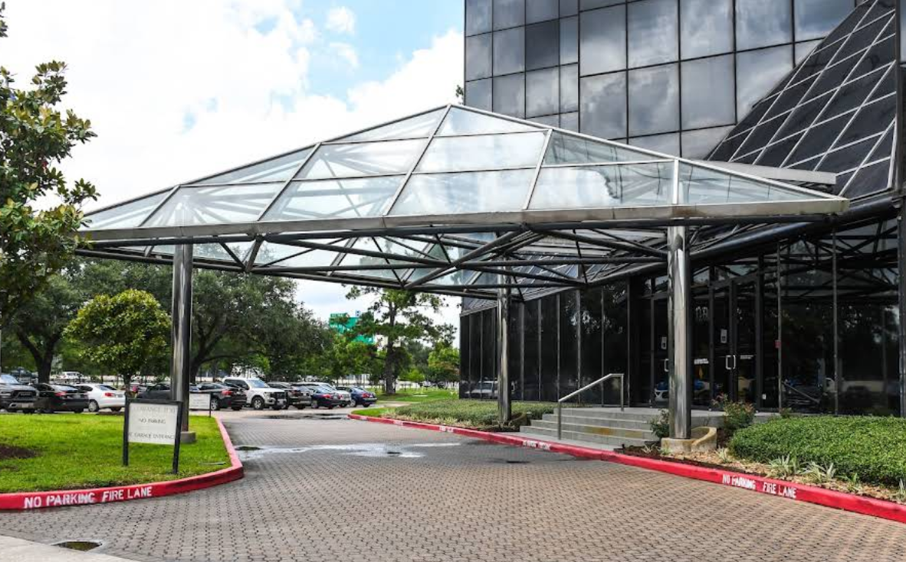

Roadway Negligence Claims For Motorcyclists
After a motorcycle crash, the strength of a potential claim often depends on how clearly the events, losses, and responsible parties can be documented. A rider may benefit from speaking with Motorcycle Accident Lawyer Houston before giving an insurer a detailed account, particularly when several vehicles, traffic signals, or disputed accounts are involved. Counsel can help organize photographs, witness contacts, repair records, and employment information without assuming that an early settlement offer reflects the full value of the case. Early guidance from Motorcycle Accident Lawyer Houston may also help preserve relevant communications and identify deadlines that could affect available legal remedies.
Responsibility is not always determined by the fact that a rider sustained serious harm. Investigators and insurers may compare each participant's actions, the sequence of maneuvers, and the reliability of available testimony. Motorcycle Accident Lawyer Houston can explain how comparative-fault rules may affect recovery when a carrier alleges that the rider contributed to the incident, while Motorcycle Accident Lawyer Houston can assess whether statements from passengers, business cameras, or electronic data support a different account. The analysis may also include lost income, future limitations, property loss, and other documented consequences.
Before accepting payment or signing a final agreement, a claimant should understand which losses the document covers and whether it ends further requests for compensation. Legal counsel can review policy limits, identify potentially responsible entities, and discuss negotiation or litigation strategies based on the available record. Motorcycle Accident Lawyer Houston may be useful when an insurer disputes coverage, delays a decision, or proposes terms that do not reflect the documented impact of the incident. Keeping organized records and responding to formal notices on time can help protect the claimant's position throughout the process.

Investigating Hidden Causes Of Wrecks
A road incident that seems simple at first can reflect a combination of roadway design, visibility, equipment performance, and timing. Investigators may study lane geometry, temporary work zones, lighting levels, sightline obstructions, and changes in pavement texture to understand what was perceptible in the moments before impact. Motorcycle Accident Lawyer Houston can bring a legal perspective to that review, while Motorcycle Accident Lawyer Houston may help frame which records and technical questions deserve attention.
Mechanical and digital evidence can add another layer to the reconstruction. A damaged tire, shifted cargo, faulty component, navigation data, or an automated system alert may reveal an event that was not obvious from the final positions of the vehicles. Analysts can compare event data, roadway measurements, weather archives, and time-stamped footage to test whether one condition preceded another. Input from Motorcycle Accident Lawyer Houston can help organize the issues for further assessment, and Motorcycle Accident Lawyer Houston may be useful when technical findings need to be explained in clear terms.
A disciplined process also requires preserving information before it is altered by repairs, cleanup, changing weather, or routine system updates. Independent observations, original digital files, and site records are more useful when their source and timing are known. Working with Motorcycle Accident Lawyer Houston may help establish a focused sequence of events, distinguish verified facts from speculation, and identify whether a specialist or public record could resolve an open question.
Preservation Duties Protect Crash Evidence
Information connected to a collision can become difficult to obtain when it is held by several people or systems. Business video may be overwritten, digital records may be retained for only a short period, and a damaged vehicle may be altered before its condition is independently reviewed. An early discussion with Motorcycle Accident Lawyer Houston can help identify material that should be requested, while Motorcycle Accident Lawyer Houston may help frame communications so they are specific, dated, and directed to the proper custodian.
Potential sources can include dispatch entries, business surveillance, onboard data, repair histories, inspection reports, payment records, and messages exchanged by involved parties. Original files should be kept in their native format when feasible, with copies labeled by source and date; screenshots alone may omit useful technical information. Motorcycle Accident Lawyer Houston can assess whether a formal notice or subpoena is warranted, and Motorcycle Accident Lawyer Houston may help address objections involving privacy, access, or the scope of a request.
Anyone who receives a preservation request should place routine deletion practices on hold for information that may reasonably relate to the dispute. That may include email, cloud files, telematics, maintenance records, internal messages, and physical components, depending on the circumstances. A clear log of what was collected, where it came from, and who handled it can support later questions about reliability. Motorcycle Accident Lawyer Houston can explain how these steps fit into the broader process and whether additional action is needed before negotiations or formal proceedings begin.
Haque Law, PLLC
Haque Law, PLLC
1111 North Loop W, Suite 1111, Houston, TX 77008
(281) 453-0803